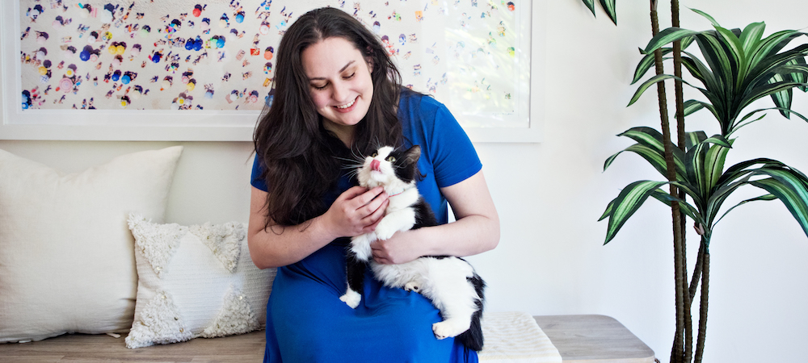
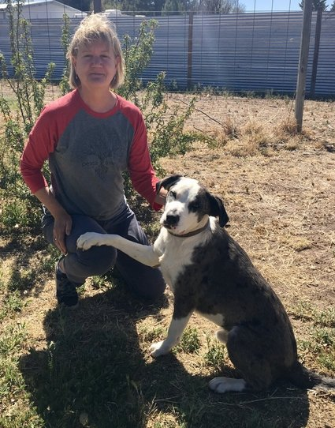
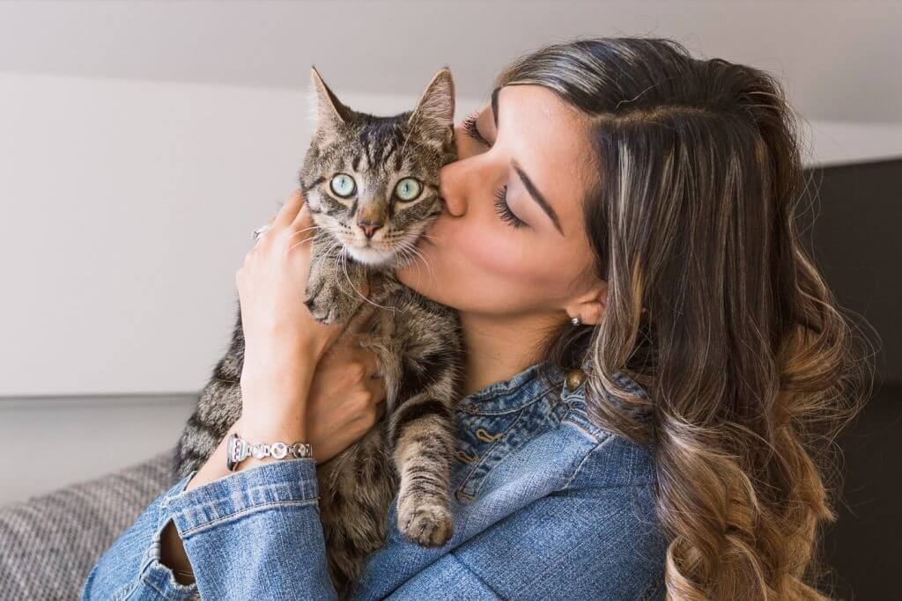

Let us help you find your perfect new family member
We provide wellness checks and immunizations
Learn how to be the trainer your friend needs.
We adopted our dog Friday here only a week ago and he’s the sweeter than we could have ever imagined. The staff at Best Friends was friendly, helpful and knowledgable about the dogs under their care. I will definitely be suggesting WAGS to all my friends and family who are interested in adopting a dog. A+
On Feb 13 2016 I adopted a little Chi,she was left in a shopping basket in the parking lot in front of Best Friends.I named her Bella,she is such a lover and the sweetest little thing and very spoiled. I want to thank Best Friends for everything they do to help these babies, you are truly heros in my book.
We adopted our baby here just under 1 year ago, everyone was so helpful and still remembers him when we go in to the clinic. He is just the best, we adore him so much! So thankful for Best Friends for helping us find our sweet Bruno. We are celebrating his first birthday with lots of treats and toys and a doggy meal at the Lazy Dog (but not too many treats because he is on a diet, per Dr. Tran’s advice :P)
I adopted my baby Dexter from here 2 years ago this month we couldn’t imagine our home without him!! He is a “Chugg” and of course with a little training he’s been the sweetest thing. I’d definitely consider adopting from here if we were interested in bringing another pet into the family.
Every month we send out a list of all our new available friends.